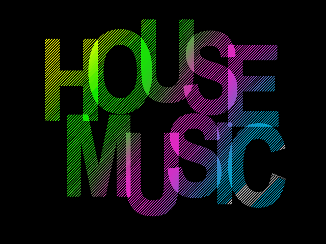

HOUSE
Es
un estilo de música electrónica de baile que se originó en la ciudad de
Chicago, Estados Unidos, hacia 1981. Inicialmente, se hizo popular en
la primera mitad de los ochenta en las discotecas orientadas hacia el
público afroamericano, y latino en chicago.Posteriormente
llegó a Europa, donde se convirtió en un fenómeno masivo con una
influencia dominante en otros estilos musicales como el pop y la música
de baile desde mediados de los años 1990.Máximos exponentes
Armin Van Buuren |
Avicii |
Bingo Players |
Deadmau5 |